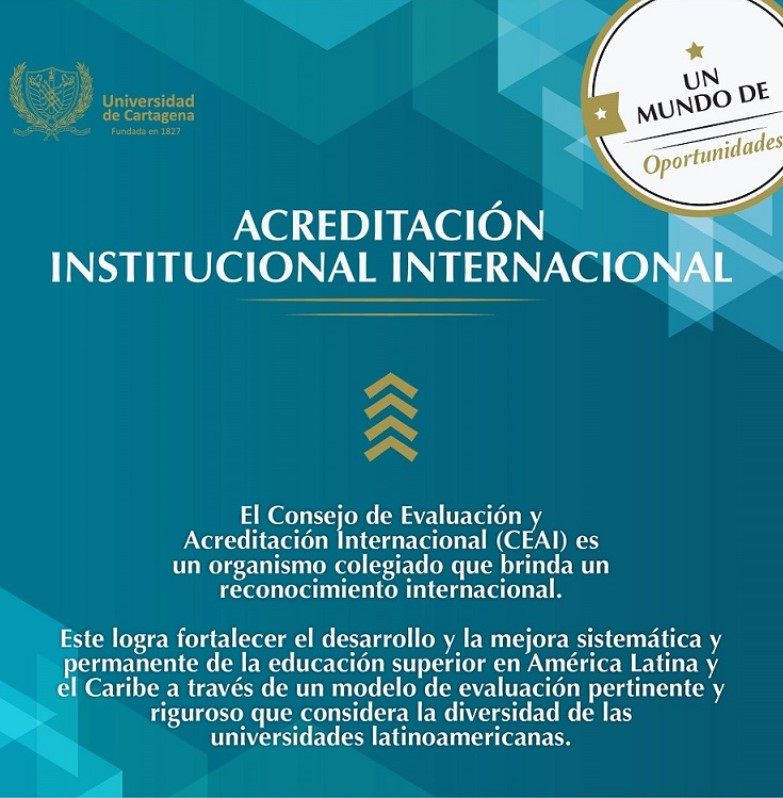
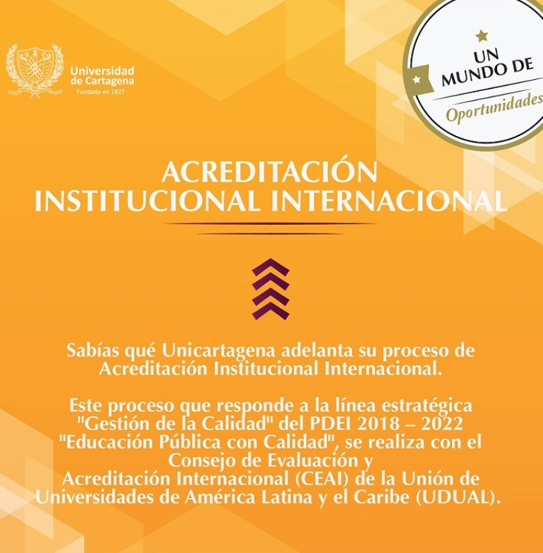
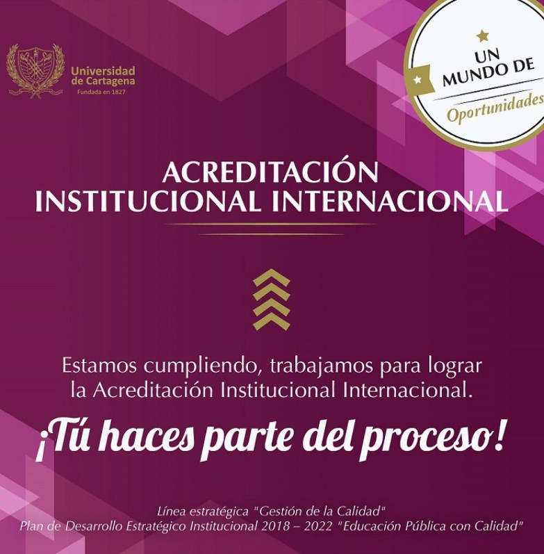
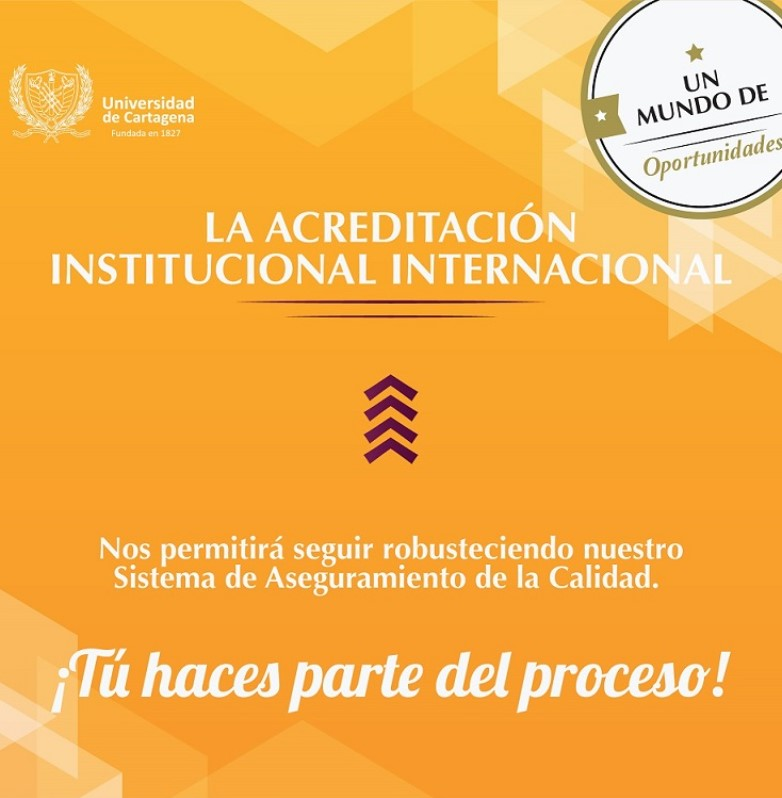
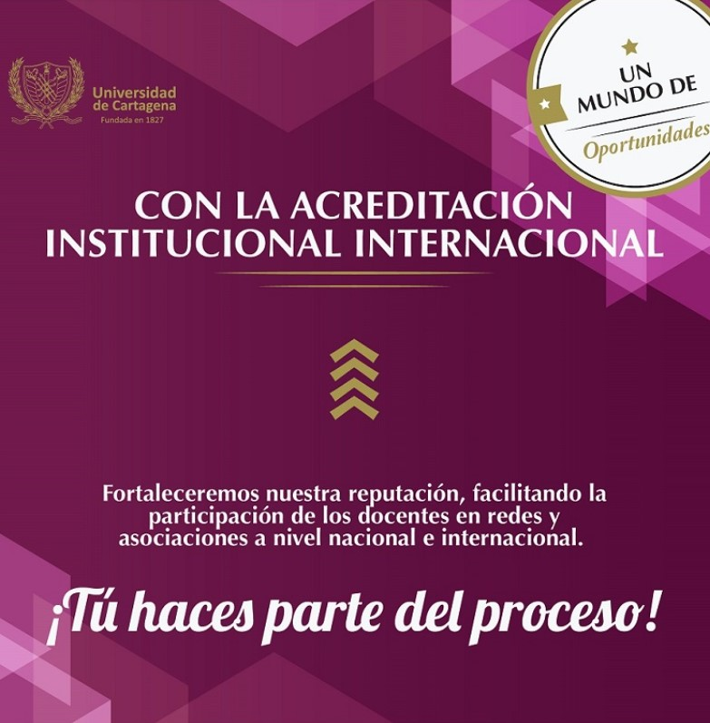
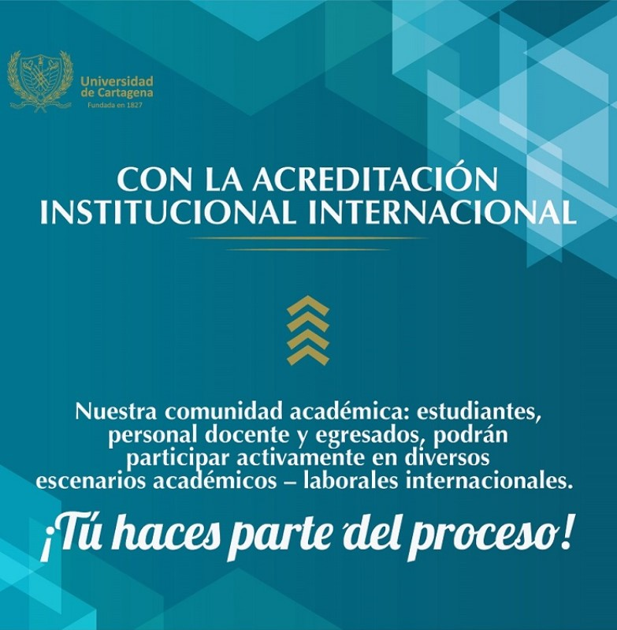

¿Que hicimos este semestre?
Historia
En 1826, el general Francisco de Paula Santander mediante decreto dio vía libre a la creación de una universidad en la Región Caribe de Colombia y fue escogida como sede Cartagena de Indias. El 6 de octubre de 1827 el Libertador Simón Bolívar la oficializó, nació de esa manera la Universidad del Magdalena y del Istmo, pues en aquella época Panamá hacía parte de la Gran Colombia. La Universidad se instaló el 11 de noviembre de 1828 en el antiguo convento de los agustinos calzados, siendo su primer rector el teólogo José Joaquín Gómez Lacroudache. Luego pasó una serie de cambios en su nombre: 1842, Colegio del Segundo Distrito; en 1850, Colegio Nacional de Cartagena; en 1854, Colegio Provincial de Cartagena; en 1863, Colegio de Bolívar; en 1867, Colegio Universitario del Estado Soberano de Bolívar; en 1887, Colegio del Departamento de Bolívar; en 1890, Universidad de Bolívar; en 1896, Colegio de Fernández de Madrid; en 1898, de nuevo Universidad de Bolívar. Posteriormente, en razón a cambios de tipo territorial y políticos, pasó a ser la Universidad de Cartagena en el Claustro de San Agustín, en ese entonces solo contaba con dos pregrados: Derecho y Medicina.
En la década de 1950 del siglo XX, se adopta oficialmente el escudo actual de la Universidad. En 1989 se inaugura el Campus de la Salud, al que se trasladaron las facultades de Medicina, Enfermería, Odontología y Ciencias Químicas y Farmacéuticas, en 2001 se traslada al Campus Piedra de Bolívar la facultad de Ciencias e Ingenierías, en 2003 se traslada a esa misma sede la facultad de Ciencias Económicas y en 2014 se traslada a la sede San Pablo la facultad de ciencias exactas desde piedra de Bolívar y el programa de Lenguas extranjeras de San Agustín.
En 1993 se estableció la formación a distancia a través de los Centros Regionales de Educación a Distancia (Centro Tutorial). La UdeC tiene programas en ciertos municipios del departamento de Bolívar y Córdoba.
La Universidad de Cartagena se ha convertido en un referente de calidad de la educación superior en Colombia y en la región Caribe. Logrando posicionarse como la universidad pública líder del Caribe colombiano y con una trayectoria de más de 40 años de cultura de calidad institucional. En el año 2014 recibió la Acreditación Institucional de Alta Calidad por parte del Ministerio de Educación Nacional por un periodo de 4 años y se unió al grupo de las 32 instituciones de educación superior que contaban con dicha acreditación en el país. En el año 2018 renovó la Acreditación en Alta Calidad, conferida por el Ministerio de Educación Nacional mediante Resolución 01968 del 12 de febrero de ese mismo año. En el año 2017, la Institución dio sus pasos hacia la acreditación internacional, recibiendo la primera acreditación internacional de programa académico, otorgada al programa de Enfermería bajo el sistema ARCU-SUR, mecanismo de acreditación regional del MERCOSUR. Entre el 2017 y 2018, la Institución contaba con cinco nuevos programas con acreditación internacional bajo los parámetros de la agencia internacional ABET (Química Farmacéutica, Ingeniería Civil, Ingeniería Química, Ingeniería de Alimentos e Ingeniería de Sistemas). En el año 2022 obtiene Acreditación Institucional Internacional, reconocimiento otorgado por un periodo de 6 años por el Consejo de Evaluación y Acreditación Internacional promovido por la Unión de Universidades de América Latina y del Caribe, UDUAL, el cual reconoce los altos estándares de calidad institucionales.
El Bicentenario
Novedades
- Celebración del Bicentenario
La UdeC está celebrando su bicentenario con una serie de eventos y proyectos.
- Proyecto de Ley
Se ha presentado un proyecto de ley para que la Nación se vincule a la celebración del bicentenario de la universidad
- Actividades y Proyectos
La universidad está llevando a cabo la restauración de edificios históricos, la creación de un centro de estudios en El Carmen de Bolívar y la ampliación de sus campus.
- Fondo Bicentenario
Se ha creado un comité para el Fondo Bicentenario con el objetivo de recaudar fondos y apoyo de la comunidad para la celebración.
- Acreditación
La UdeC ha logrado la acreditación nacional y, recientemente, la acreditación internacional, destacando su compromiso con la calidad educativa.
- Legado
El bicentenario es una oportunidad para reconocer el papel de la UdeC como institución educativa y su impacto en la sociedad durante dos siglos.
¿QUE ES Y QUE DICE EL TROPELÍN?
Paula Rendón

El Tropelin es el himno cuya música y letra compuso el maestro Adolfo Mejía a la
Universidad de Cartagena. “Adolfo Mejía se entusiasmó tanto con el grupo que compuso
algunas obras a cuatro voces especialmente para el coro, como el Himno de Cartagena y
el Tropelin, conocido más tarde como el Himno de la Universidad”, cuenta el investigador
Vicente Vargas y añade: “como dato importante es conveniente señalar que la primera
vez que la cantaron fueron dirigidos por el propio Majía”, lo cual ocurrió el 13 de junio de
1962.
No hay olvidar que este querido maestro de la música nacido en San Luis de Sincé en
1905, fue estudiante del Claustro de San Agustín en la Facultad de Bachillerato, Filosofía
y Letras.
¿Pensaba Mejía en la universidad como pudiéramos pensaría ahora nosotros? Pensarla,
sentirla, quererla. Np lo sé, pero la letra nos habla de un maravilloso entusiasmo por ella,
y también de alegría. Nos habla de Tropelin que se acerca, un Tropelin de jóvenes
ansiosos: ¡La Torre de Babel¡, no la torre de confusión que se formó en Babel y a la cual
hace alusión la Biblia, “por esto fue llamado el nombre de ella Bebel, porque allí
confundió Jehová el lenguaje de toda la tierra, y desde allí los esparció sobre la faz de
toda la tierra” (Génesis 11-9), sino la torre donde confluye los saberes, los idiomas, los
puntos de vista, las diferencias, las diversidades, las contradicciones, las paradojas, los
de aquí, los de allá entrelazados por el común querer saber, querer aprehender el
conocimiento.
Y entonces brinda por Moré, aquel que perdió una tuerca, pero que gozo también del
conocimiento, tal vez se atiborró tanto de él que no supo equilibrarlo o no puedo
emplearlo, no pudo hacer lo que dice Confucio que es la esencia del conocimiento.
La copa llena siempre está, pues siempre hay un motivo para brindar con alegría, un
grado, un premio, el ingreso, la partida, el éxito de un examen, la finalización de un
semestre, el comienzo del siguiente, un profesor invitado, un homenaje al arte, a la letras,
a la misma música, en fin rondas vienen y rondas va.
El coro es festivo, en compás de 2/4, con alegre ritmo de marcha. Allegro (rápido), nos
pone en movimientos, nos entusiasma, nos motiva, nos empuja; y luego viene una cierta
calma, es como un niño que canta a su madre, madre mía siempre serás, representas la
libertad, te convertiremos en joven y así te ve la humanidad, te renuevas en cada uno de
nosotros cuando a ti llegamos, cuando de ti nacemos a la luz y bebemos verdad en tus
claustros, en tus aulas, en todos tus espacios. Y lo más hermoso, nos acoges como
hermanos.
Continúa el compás de 2/4 un poco lento, menos rápido que el anterior, nos tranquiliza
con un moderato, en cuanto de reconocimiento a la Universidad y a la juventud que
siempre llena sus claustros. Realza grandes valores: libertad, fraternidad, inmortalidad, y
verdad. ¡Arriba juventud por la universidad¡


Escudo
El logo-símbolico de la Universidad de Cartagena esta formado con los colores representativos; negro, dorado y gris claro.
Esta formado por dos cuernos que representan abundancia con frutos, arcos y flechas cruzadas, una fasce colombiana, laureles y divisas, acompañado del nombre de República de Colombi, el nombre de la Universidad y la fecha de fundación; Universidad de Cartagena 1827.
Está fue la descripción que se tuvo hace muchos años del escudo universitario: "Escudo de campo suizo, con trechor en el contorno, dos cuernos de la abundancia sólo con frutos, una fasce colombiana, prescindiendo del arco y flechas cruzadas, sobre un campo ovalado con los textos: "Universidad de Cartagena-Initium sapientiae Timor Domini-República de Colombia”, sin divisa y sin laures.
De forma actualizada tenemos esta descripción;
“Escudo de forma suiza, campo de coloro negro o sable, con trechor en el contorno, con figuras naturales como frutos (sobresale una granada) en un par de cornucopias, una en el flanco izquierdo y otra en el flanco derecho, los frutos pueden ser de esmalte diferentes. Las cornucopias, símbolo de la diosa romana de la abundancia, tienen el esmalte en oro8 Una fasce romana (convertida en colombiana por líderes criollos) de 12 lanzas (V, figura 13) con su segur (hacha de Lictor) y arcos con flechas cruzados también en oro; una divisa (frase o lema), que se encuentra en la base del escudo y reza: Universidad de Cartagena 1827; por último. Laureles incrustados de perlas de lado y lado entrelazados por debajo en color verde o sinople".
Luis Javier Muentes de Avila

Estructura Orgánica de la UDC
Onigramas

Servicios de Bienestar
Secciones

Deporte

Cultura

Salud y seguridad Social

Asuntos Estudiantiles y Profesorales

Asesoría Psicológica

Trabajo social
Biblioteca
La Biblioteca de la Universidad de Cartagena, oficialmente conocida como Centro de Recursos para el Aprendizaje
y la Investigación (CRAI), constituye uno de los pilares fundamentales en la vida académica, investigativa y
cultural de esta histórica institución. Su sede principal, la Biblioteca “José Fernández de Madrid”, ubicada en
el emblemático Claustro de San Agustín en el Centro Histórico de Cartagena, ofrece espacios amplios y funcionales
que incluyen salas de lectura con capacidad para decenas de estudiantes, salas de referencia para consulta
especializada, una hemeroteca con colecciones de revistas científicas y periódicos, zonas de préstamo
automatizado, sistemas de seguridad antihurto, una sala de internet equipada con computadores de acceso público
y un área de información para la orientación permanente al usuario. Además de esta sede central, la universidad
ha desarrollado una red de bibliotecas satélites en los distintos campus y centros tutoriales distribuidos por
la región, como en Piedra de Bolívar (donde se imparten programas de Economía, Contaduría e Ingeniería),
Zaragocilla (donde se concentran las facultades del área de la salud), San Pablo, así como en los municipios
de El Carmen de Bolívar, San Juan Nepomuceno y Magangué, garantizando el acceso al conocimiento en todas
sus sedes. La Biblioteca también administra la Casa Museo Rafael Núñez, un espacio cultural con una
colección patrimonial compuesta por cerca de 2.500 volúmenes literarios y de referencia, donde se articula el
saber académico con la historia nacional y la memoria del Caribe colombiano. En cuanto a sus recursos tecnológicos,
el CRAI se ha fortalecido significativamente en los últimos años mediante la implementación del sistema
EDS (EBSCO Discovery Service), un metabuscador que permite a la comunidad universitaria localizar de forma rápida
y centralizada todo el material disponible tanto en formato físico como digital, incluyendo libros, tesis,
revistas, artículos y bases de datos especializadas. También ofrece un sistema de renovación y reserva de
libros en línea, acceso remoto a bases de datos académicas de alto impacto, participación en consorcios de
bibliotecas nacionales e internacionales, y un repositorio digital institucional donde se preserva y divulga
la producción intelectual de la universidad, incluyendo tesis de grado, trabajos de investigación,
publicaciones científicas y documentos de valor histórico. La Biblioteca no se limita a la custodia de
libros, sino que se proyecta como un ente dinamizador del aprendizaje, facilitando talleres de formación
de usuarios, jornadas de alfabetización informacional, asesorías personalizadas, inducción a estudiante
de primer ingreso, y promoviendo el acceso equitativo al conocimiento. Su misión es clara: apoyar los
procesos de formación, docencia, investigación y proyección social mediante servicios bibliográficos de alta calidad, garantizando el acceso libre y democrático a la información. En este sentido, la Biblioteca de la Universidad de Cartagena representa mucho más que un archivo o una sala de lectura; es un centro vivo de conocimiento, memoria y pensamiento crítico, profundamente comprometido con el desarrollo académico de sus estudiantes y el progreso intelectual de la región Caribe y de Colombia en general.
Acreditacion nacional e internacional






Presencia de la mujer
En cuanto a la vinculación de las mujeres a la Universidad de Cartagena, es interesante analizar su presencia
en dos periodos significativos. El primero, ubica a una extranjera que independiente de su procedencia y nacionalidad,
marcó un hito de rebeldía y desconcierto institucional en un contexto de región y de país donde todavía no se había
resulto normativamente su ingreso, ni siquiera a la secundaria en igualdad de condiciones con el género masculino.
La presencia de Paulina Beregoff en la Universidad De Cartagena fue anterior al ambiente de luchas reivindicativas
sectorizadas que se dieron en el país alrededor de los estudios femeninos. Paulina Beregoff fue la primera mujer
universitaria en Colombia, ni siquiera en los textos, artículos o ensayos relacionados con la educación femenina
se referían a ella. Su presencia en la Universidad fue medianamente inadvertida hasta que se vio abocada a responderle
por sus acciones académicas e investigativas, a arzobispos, a la prensa local y a la capitalina que se fijó en su
presencia a raíz de grado como médica. El segundo periodo a estudiar, hace referencia al caso de las primeras mujeres
de nacionalidad colombiana, después de un vacío previo de veinte años antes del ingreso de Paulina Beregoff, son los
casos de Beatriz Haydar Ordage, Carmen Barrios Angulo, Georgina Consuegra Lujan, Martha Clark, Concepción Bula de
Puerta, Nancy Polo Guerrero, Daira Uribarren Donado, quienes ingresaron a las facultades existentes en la Universidad
de Cartagena. Este vacío, explica las luchas que el colectivo femenino tuvo que realizar para abrirse espacio dentro
de la educación superior colombiana que engendraba por tradición papeles definidos dicotómicamente para hombre y
mujeres.
La historia de la Universidad de Cartagena, una de las instituciones educativas más antiguas y prestigiosas del Caribe
colombiano, no puede contarse sin destacar el silencioso pero significativo proceso de incorporación de las mujeres a
sus aulas. Esta inclusión, que hoy se da por sentada, fue en su momento un acto de resistencia y transformación que
desafiaba los esquemas patriarcales de la sociedad colombiana y de su sistema educativo. Analizar la presencia femenina
en esta universidad es, por tanto, reconocer el papel histórico de la mujer en la lucha por el acceso al conocimiento
y a la equidad.
Dos momentos marcan especialmente la vinculación de las mujeres a la Universidad de Cartagena. El primero de ellos está
protagonizado por una figura tan singular como olvidada: Paulina Beregoff, una extranjera que, a pesar de no haber nacido
en Colombia, se convirtió en la primera mujer universitaria del país. Su presencia en la universidad, en una época donde
aún no se permitía formalmente el ingreso de las mujeres ni siquiera a la educación secundaria en igualdad de condiciones,
representa una ruptura radical con las normas establecidas. Beregoff ingresó a un espacio tradicionalmente masculino sin
respaldo legal, sin precedentes y sin redes de apoyo, lo que convirtió su trayectoria en un acto profundamente revolucionario.
Durante mucho tiempo, su paso por la Universidad de Cartagena fue apenas registrado. Su nombre no aparecía en los textos sobre
la educación femenina, y su historia no era contada en las crónicas oficiales. Fue apenas tras su graduación como médica cuando
se volvió imposible ignorarla. Las autoridades eclesiásticas, la prensa local y nacional y diversos sectores conservadores de
la sociedad se escandalizaron, preguntándose cómo era posible que una mujer hubiese alcanzado tal nivel académico. Sin embargo,
Paulina Beregoff no solo se graduó, sino que también abrió simbólicamente la puerta para que otras mujeres se atrevieran a
soñar con la universidad.
El segundo periodo importante en esta historia corresponde al ingreso de las primeras mujeres colombianas a la Universidad de
Cartagena, alrededor de dos décadas después del paso de Beregoff. Este nuevo ingreso femenino tampoco fue inmediato ni sencillo.
Fue el resultado de luchas silenciosas y perseverantes frente a una estructura educativa que reservaba el pensamiento, la
ciencia y la dirección pública a los hombres, mientras relegaba a las mujeres al espacio privado, doméstico y reproductivo.
Nombres como Beatriz Haydar Ordage, Carmen Barrios Angulo, Georgina Consuegra Luján, Martha Clark, Concepción Bula de Puerta,
Nancy Polo Guerrero y Daira Uribarren Donado, marcan una nueva etapa en la historia de la universidad. Estas pioneras
ingresaron a las distintas facultades existentes, desafiando estereotipos y sentando las bases de una transformación
cultural que aún continúa. Cada una de ellas representa no solo una historia individual de superación, sino también una
victoria colectiva para las mujeres en Colombia.
Este segundo periodo refleja el vacío de casi veinte años entre la presencia de Beregoff y la admisión formal de mujeres
colombianas, un lapso que evidencia la resistencia institucional y cultural al ingreso femenino en la educación superior.
El sistema universitario colombiano, como la mayoría de los sistemas en América Latina, se había construido sobre una concepción
profundamente patriarcal del saber. La educación era vista como una herramienta para formar a los futuros líderes varones del
país, mientras que a las mujeres se les asignaban roles estrictamente definidos como madres, esposas y cuidadoras.
Codigo de etica
El Código de Ética de la Universidad de Cartagena constituye un instrumento esencial dentro de la estructura
institucional, diseñado para orientar la conducta de todos los miembros que integran la comunidad universitaria,
desde los estudiantes y docentes hasta los directivos, administrativos, investigadores, egresados y demás actores
vinculados de forma directa o indirecta con el quehacer universitario. Este documento no solo establece un
conjunto de normas, sino que promueve un modelo de comportamiento basado en principios fundamentales como
la integridad, el respeto, la responsabilidad, la transparencia, la justicia, la equidad, la tolerancia, la
solidaridad y el compromiso con el bien común, con el propósito de construir y sostener una cultura ética
sólida y coherente con la misión educativa de la institución. El Código de Ética busca formar no solo
profesionales competentes en sus respectivas disciplinas, sino también ciudadanos conscientes de su papel en
la sociedad, dotados de valores que les permitan actuar de forma recta, reflexiva y respetuosa, tanto dentro
como fuera del entorno universitario. Se trata de una carta de navegación que establece pautas claras sobre
cómo actuar frente a situaciones complejas o dilemas morales, ofreciendo un marco de referencia que refuerza
la toma de decisiones informadas y responsables en el ejercicio académico, investigativo y administrativo.
En su contenido, el código contempla los deberes éticos que deben guiar el actuar de los miembros de la comunidad
universitaria, tales como la honestidad intelectual, el respeto por la diversidad de pensamiento, la defensa del
interés público, el uso adecuado de los recursos institucionales, la promoción del diálogo, la cultura de paz, el
cumplimiento de los compromisos adquiridos, el respeto por la normativa interna y la participación activa en el
fortalecimiento de la vida institucional. Del mismo modo, define con claridad conductas contrarias a los principios
éticos, como el plagio, la falsificación de información, el soborno, el acoso en cualquiera de sus formas, el abuso
de poder, el uso indebido de bienes públicos, la discriminación por razones de género, orientación sexual,
religión, raza o ideología, y cualquier otra acción que atente contra la dignidad humana o afecte negativamente
la convivencia universitaria. A través de estos lineamientos, el código busca prevenir conflictos, fomentar el
respeto mutuo y proteger la integridad institucional, reforzando así la confianza dentro de la comunidad académica.
Además, el Código de Ética establece mecanismos institucionales para la recepción de denuncias y la atención de faltas
éticas, contemplando la existencia de comités de ética o instancias disciplinarias que se encargan de evaluar y resolver
estos casos con imparcialidad, garantizando el debido proceso y el derecho a la defensa. Estos órganos cumplen un papel
fundamental en la vigilancia y promoción del cumplimiento de los principios éticos, y son acompañados por políticas de
capacitación, sensibilización y formación continua en ética, dirigidas a estudiantes, docentes y personal
administrativo, con el fin de mantener viva la reflexión sobre la conducta moral dentro del contexto universitario.
Cabe destacar que el Código de Ética no es un documento estático, sino que se actualiza conforme a las nuevas
dinámicas sociales, académicas y tecnológicas, respondiendo a los retos contemporáneos que enfrentan las
universidades públicas como espacios de transformación social, donde se busca promover no solo la excelencia
académica, sino también una ciudadanía crítica, participativa y comprometida.
Asimismo, el código promueve el ejercicio de la autonomía responsable, es decir, la capacidad de cada miembro de la
comunidad para actuar con libertad dentro del marco de la legalidad y la moralidad, asumiendo las consecuencias de
sus actos y decisiones. Esta perspectiva fortalece la democracia universitaria y fomenta la participación activa
en los procesos de gobierno institucional, el trabajo colaborativo y el respeto por las diferencias. En este sentido,
el Código de Ética se vincula estrechamente con los procesos de formación integral, ya que no puede haber verdadera
educación sin una base ética que oriente el saber hacia el servicio social y la transformación de realidades.
Además, al incorporar principios como la transparencia y la rendición de cuentas, el código se convierte también
en una herramienta de lucha contra la corrupción, garantizando la probidad en la gestión pública universitaria
y el uso adecuado de los recursos que son patrimonio colectivo.
Tecnica de estudio
Las técnicas de estudio son herramientas cognitivas diseñadas para mejorar la capacidad de aprender, organizar,
comprender, retener y aplicar información de manera eficaz. Su uso no solo incrementa el rendimiento académico,
sino que también favorece el desarrollo de habilidades como la atención, la memoria, la autonomía y el
pensamiento crítico. En un entorno educativo cada vez más exigente, aplicar técnicas de estudio de forma
estratégica puede marcar la diferencia entre memorizar de forma pasiva y aprender de verdad. Una de las
técnicas más clásicas y efectivas es el subrayado consciente, que consiste en leer primero el texto completo
y luego resaltar, con colores o líneas, las ideas clave, conceptos centrales y relaciones importantes. No se
trata de subrayar al azar, sino de identificar lo esencial, lo cual mejora la comprensión y facilita el
repaso visual. En paralelo, el resumen permite condensar la información en un lenguaje propio, obligando
al estudiante a reelaborar mentalmente el contenido, y por tanto, a comprenderlo de verdad.
Otra técnica valiosa es la elaboración de esquemas o mapas conceptuales, que permiten visualizar cómo se relacionan los
distintos conceptos de un tema. Estas representaciones gráficas organizan la información de forma jerárquica (como un
árbol de ideas) o asociativa (como una red), lo cual ayuda a estructurar mentalmente el conocimiento. Los mapas mentales,
por ejemplo, son útiles para estimular la creatividad y funcionan especialmente bien en materias que implican
clasificación, análisis o síntesis, como biología, historia o literatura. Por otro lado, el uso de tarjetas didácticas
o flashcards es una técnica excelente para el aprendizaje memorístico, ya que funciona con la repetición espaciada y
el recuerdo activo, dos elementos clave en la consolidación de la memoria a largo plazo.
Entre las estrategias más modernas está el método Pomodoro, creado por Francesco Cirillo, que promueve la gestión del
tiempo mediante sesiones de 25 minutos de estudio intensivo seguidas de 5 minutos de descanso, y luego un descanso más
largo cada cuatro ciclos. Esta técnica mejora la productividad, evita la fatiga mental y ayuda a mantener la
concentración al evitar el agotamiento que produce estudiar durante horas seguidas sin pausas. Otra técnica con
respaldo científico es la práctica distribuida o espaciada, que consiste en repartir las sesiones de estudio a lo
largo del tiempo, en lugar de concentrarlas en un solo día. Por ejemplo, es más efectivo estudiar una hora diaria
durante cinco días que estudiar cinco horas seguidas el día antes del examen. Esta técnica aprovecha el llamado
“efecto de espaciado”, que mejora el recuerdo a largo plazo.
También se destaca la autoevaluación, que consiste en formular y responder preguntas sobre el contenido que se ha
estudiado. Esta técnica ayuda a consolidar lo aprendido, detectar errores o vacíos, y desarrollar seguridad frente
a los exámenes. Puedes crear tus propias preguntas o usar bancos de preguntas anteriores. En la misma línea, la técnica
Feynman consiste en explicar el contenido con palabras simples como si se le enseñara a otra persona; si no puedes
explicar algo claramente, es probable que no lo hayas comprendido bien. Esta técnica obliga al estudiante a
reorganizar la información mentalmente, identificar lagunas en su comprensión y fortalecer el aprendizaje profundo.
Otra estrategia útil es el uso de nemotecnia, es decir, técnicas para memorizar usando asociaciones mentales, acrónimos,
rimas o imágenes mentales. Por ejemplo, para recordar los planetas del sistema solar se puede usar una frase como
"Mi Viejo Tío Mario Jamás Supo Usar Nubes", donde cada palabra representa un planeta. Las técnicas nemotécnicas son
ideales para listas, definiciones o secuencias.
Además, hay técnicas metacognitivas, como llevar un diario de estudio o hacer un seguimiento del propio proceso de
aprendizaje, evaluando qué funciona y qué no. Esto ayuda a tomar conciencia de los propios hábitos y a ajustarlos de
forma consciente. Estudiar también implica tener un ambiente adecuado: un lugar bien iluminado, libre de distracciones,
con una postura cómoda y materiales necesarios a mano. Complementar las técnicas de estudio con hábitos saludables
como dormir bien, mantener una alimentación balanceada, hacer pausas
Proyecto de vida
El proyecto de vida es una guía personal que orienta nuestras decisiones y nos permite construir el futuro que
deseamos, a partir de lo que somos, sentimos, pensamos y soñamos. Es un proceso que comienza con el
autoconocimiento, etapa en la cual la persona reflexiona sobre sí misma, reconociendo sus intereses, valores,
habilidades, fortalezas, debilidades y motivaciones internas. Esta reflexión ayuda a identificar lo que realmente
se desea lograr y qué cosas dan sentido a la vida.
Luego se pasa a una fase de revisión de proyectos previos, donde se analizan ideas o planes que uno ha tenido
anteriormente, para decidir cuáles siguen teniendo valor y cuáles deben ser transformados o descartados. Esta etapa
permite evaluar si los antiguos proyectos eran propios o si respondían a expectativas externas, y comparar lo que uno
quiere con lo que otros a su alrededor han hecho, sin perder la autenticidad.
El siguiente paso consiste en plantear metas claras, tomando en cuenta tanto la situación actual como la transformación
deseada. Estas metas deben visualizarse de forma concreta, ordenada y optimista. Es útil dividirlas en metas a corto
plazo (menos de un año), a mediano plazo (de uno a cinco años) y a largo plazo (más de cinco años). Esta organización
por plazos permite distribuir el esfuerzo de forma equilibrada y realista.
Finalmente, llega el momento de pasar a la acción. Aquí se requiere disciplina, constancia, y tolerancia ante la
frustración, ya que es común que surjan obstáculos. También es importante tener una actitud flexible y positiva, con
capacidad de adaptarse a los cambios sin abandonar el camino. El proyecto de vida no es un plan rígido, sino dinámico,
que se transforma con cada experiencia y con cada nueva etapa personal.
Este enfoque puede aplicarse a muchas dimensiones: desde lo profesional y académico, hasta lo familiar, social o
incluso espiritual. Cada quien elige cómo desarrollarlo, y lo importante es que sea coherente con la propia identidad y
propósito.
Bibliografia
LINKS:
BICENTENARIO: https://revistametro.co/2025/06/proyecto-que-vincula-la-nacion-al-bicentenario-de-la-udec-fue-aprobado-por-el-congreso-y-pasa-a-sancion-presidencial/
BICENTENARIO: https://revistametro.co/2022/10/festejos-del-bicentenario-un-reconocimiento-del-rol-transcendental-que-ha-jugado-la-udec-durante-dos-siglos/#:~:text=De%20acuerdo%20con%20lo%20declarado,en%20recibir%20la%20acreditaci%C3%B3n%20internacional%C2%AB
HIMNO: https://repositorio.unicartagena.edu.co/server/api/core/bitstreams/3bfd5e27-dfeb-4903-845f-15d5de840de7/content
ACREDITACIONES:
https://www.unicartagena.edu.co/universidad/autoevaluacion-y-acreditacion/acreditacion-institucional-internacional
MUJERES:
https://repositorio.unicartagena.edu.co/entities/publication/03f61433-b2f7-40d2-b1ea-1fcf22eb29b1
CODIGO DE ETICA:
https://www.calameo.com/books/004774168c12886876b5e?utm_source=chatgpt.com
CODIGO DE ETICA: Navarra, C. (s,f). Valores Humanos e Internacionales. https://classroom.google.com/u/2/c/Njk4NTM3OTI1NjQx/m/Nzg3NTIwNjk1NDU3/details
TECNICAS DE ESTUDIO: https://academia5c.com/metodos-de-estudio-eficaces?utm_source=chatgpt.com
TECNICAS DE ESTUDIO: https://educational.tools/es/8-metodos-de-estudio-cientificamente-probados-y-efectivos/?utm_source=chatgpt.com
PROYECTO DE VIDA: NAVARRO, C. (sf). PROYECTO DE VIDA. https://classroom.google.com/u/2/c/Njk4NTM3OTI1NjQx/m/Nzc5MzY5NTg0OTc0/details